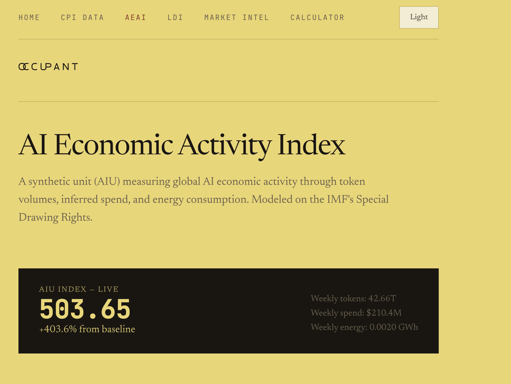

Occupant Indices
Public measurement infrastructure I built for the AI economy. Three live indices that turn scattered public data into numbers you can track over time — the price tag, the activity meter, and the labor gauge for AI work.

The premise
Every major input to the economy has a published number you can look up — a spot price for crude, a CPI print for groceries, a wholesale rate for electricity, a capacity factor for a wind farm. Occupant builds the same kind of instrument for AI compute: a standardized, dated, methodology-driven yardstick that anyone — a procurement officer, an investor, a policy researcher, or another model — can read cold and act on.
It’s infrastructure, with the same access for everyone. The model is closer to a public yield curve than a SaaS dashboard.
The indices
$CPICompute Price Indexthe price signal
Measures: the price of AI work at the basket level.
$CPI defines a fixed basket of standardized workloads and re-prices that basket every day across capability tiers, volume-weighted over 2,188 models and normalized to February 2025 = 100. It’s a deflator: hold the basket constant, watch the cost move.
- Capability tiers:
$BULK(commodity models under $1/MTok),$FRONT(frontier capability, ranked by Arena ELO),$JUDGE(reasoning-intensive, o1 / o3 / R1-class),$LCTX(long-context, 128K+). - Build Cost sub-indices apply realistic, fixed workload mixes so a reader lands on the number that matches their own usage:
$START(startup builder),$AGENT(agentic systems),$THRU(high-throughput). - Published across multiple horizons — since-launch, year-over-year, quarter- and month-to-date, week-over-week.
Reading it: at ~62.4, a basket of AI work costs about 38% less than at launch, and fell ~9.7% in the most recent month.
$AIUAI Economic Activity Indexthe volume signal
Measures: the volume of AI economic activity, expressed as a synthetic unit (the AIU) modeled on the IMF’s Special Drawing Rights.
The AIU is a weighted composite:
- 60% token throughput — usage intensity.
- 30% inferred spend — tokens × blended pricing, the economic scale.
- 10% energy proxy — a blend of token-derived energy estimate (70%) and global grid-investment growth (30%), so the energy term carries independent information.
Baseline February 2025 = 100. At ~503.65 it reflects roughly a 5× expansion in activity over about fifteen months — on the order of 42.7 trillion tokens and $210M of inferred spend per week.

Reading them together: total AI spend ≈ AIU × CPI. This decomposes the headline spending figure into its two drivers — efficiency gains (price) and demand growth (volume) — which is exactly the split the “is this a bubble?” debate needs.
$LDILabor Displacement Indexthe labor signal
Measures: the pressure AI puts on real jobs, reported as two distinct numbers that answer two distinct questions. The gap between them is the finding.
- Cost differential (structural). What AI could displace at today’s pricing. Across nine pilot federal workloads, average human cost runs ~$53.56/unit against ~$0.0062/unit for AI — a cost ratio on the order of 37,000× and a structural displacement potential near $4.2B/year. A pressure gauge.
- Substitution rate (observable). What procurement records show actually shifting — ~3.86%.
- Absorption dimension. When a workload automates, the index classifies whether the workforce is cut, frozen, or reallocated — because “cheaper” and “fired” are separate events.
Built on named public data: BLS OEWS + ECEC wages for human cost, FPDS / USAspending contractor spend as substitution proxy, OPM FedScope FTE counts for headcount, mapped through SOC and PSC crosswalks.
Worked end-to-end: the SNAP Eligibility deep dive resolves all three pillars to one real program — ~$25.13 per human review vs ~$0.000256 for AI, ~41M reviews/year, a ~2.1% substitution signal, and an “absorption: reallocated” verdict as caseload grows against a flat workforce. Every step is auditable on the page.
The tools
The indices are the readings; the tools let people act on them.
- LLM Cost Calculator. Enter a monthly spend or raw token volumes, pick a workload profile, and compare a tiered model mix at live
$CPIrates. Answers “lock in now or wait a quarter?” - LDI Workload Calculator. Run the human-vs-AI cost and substitution math on a workload of your own.
- AI Services Price Reasonableness Worksheet. A print-ready, FAR-style determination sheet a contracting officer can fill in, sign, and attach to an RFP, built on the
$CPIbasket. - Market Intelligence. “Sabermetrics for models” — Quality-Adjusted Price, cognitive arbitrage (≈90% of frontier capability at ≈40% of the cost), and tier analysis across the market.
How it’s built
The architecture follows directly from the infrastructure-first mandate.
- Frontend
- Vanilla HTML5 / CSS3 / JavaScript. Flat files on any static host.
- Data pipeline
- Python 3 in
src/: dedicated fetchers per source (OpenRouter, LiteLLM, BLS, FPDS / USAspending, OPM FedScope, BloombergNEF grid data), calculators (calculate_cpi,calculate_aeai,calculate_ldi), a model-tier registry, signal derivation, and historical backfill. - Storage
- Flat-file JSON in
data/, including machine-readable endpoints another agent can pull as a grounded, dated source. - Automation
- GitHub Actions on a daily cron recompute the indices and commit fresh JSON. The git history is the data lineage — every published number is reproducible from the commit log.
- Algorithms
- Deterministic, documented formulas with published weights and baselines.
- Privacy
- Client-side localStorage for the theme toggle only.
- License
- Parachute Commons: free for personal, educational, and non-commercial use; tiered terms at commercial scale.
- Cost to operate
- ~$50/month.
What this piece demonstrates
- Economic index design. Baskets, volume weighting, normalization, base periods, and a synthetic composite unit (the AIU’s SDR analogy), applied to a new domain.
- Data engineering on messy public sources. Reconciling price discrepancies across OpenRouter and LiteLLM, building SOC ↔ PSC ↔ FedScope crosswalks, and designing fallback hierarchies.
- Domain range, coherently connected. CPI / macro methodology, federal procurement (FAR, FPDS, FedRAMP), labor economics (BLS, JOLTS, OPM), and energy capital expenditure.
- Product and communication judgment. Designing for a thirty-second read by a procurement officer and holding a deliberate editorial voice.
- Pragmatic systems architecture. Static-site-plus-cron with git as an audit log; three indices that compose, where the LDI consumes the live CPI basket.
Occupant is the price tag, the activity meter, and the labor gauge for AI — public, daily, and auditable — because a market this large deserves a shared number.